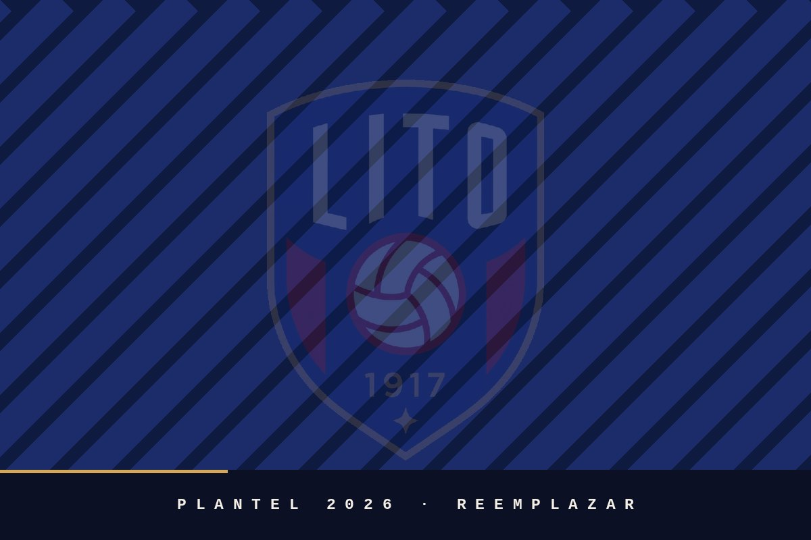

Juveniles
Categorías y horarios a confirmar.
Temporada 2026
Primer equipo del Centro Atlético Lito. Los puestos sin nombre están a confirmar.
Cargando plantel…
Cuerpo técnico

Formativas
Lito trabaja con categorías juveniles todo el año. Para sumarse hay que escribir al club con nombre, edad y categoría.
Categorías y horarios a confirmar.
Categorías y horarios a confirmar.
Fechas a confirmar. Consultas por contacto.